Mechanical Systems
Mechanical systems can be divided into two main types:
-
Translational systems
- Effort variable: Force ($F$)
- Flow variable: Velocity ($v = \dot{x}$)
- Other related quantities: displacement ($x$), acceleration ($a = \ddot{x}$), mass ($m$), spring constant ($k$), and damping/friction coefficient ($b$)
-
Rotational systems
- Effort variable: Torque ($\tau$)
- Flow variable: Angular velocity ($\omega = \dot{\theta}$)
- Other related quantities: angular displacement ($\theta$), angular acceleration ($\alpha = \ddot{\theta}$), rotational inertia ($J$), torsional spring constant, and rotational damping
Modeling of Dynamical Systems
In modeling dynamical systems, the selection of variables may vary depending on the modeling approach.
However, for physical interpretability, we typically focus on work-related variables — the effort and flow variables — in each physical domain.
In any physical domain, there are two main types of variables:
- A flow variable, related to the rate of energy or mass transfer (e.g., velocity, current, volumetric flow).
- An effort variable, representing the driving cause of that flow (e.g., force, voltage, pressure).
The instantaneous power in the domain is the product of effort and flow, and the work done is their integral:
$$ P = \text{Effort} \times \text{Flow} $$
$$ W = \int P\,dt = \int (\text{Effort} \times \text{Flow})\,dt $$
Work and Energy
External work is given by:
$$ W = F \cdot d $$
where
- $F$ is the force
- $d$ is the displacement
For a mass element (kinetic energy storage):
$$ F = m a = m \ddot{x} $$
D’Alembert’s Principle
According to D’Alembert’s Principle, in a dynamical system, the inertia force is treated as a reaction force.
Thus, instead of $\sum F = m a$, we write:
$$ \sum F - m a = 0 $$
or equivalently,
$$ \sum F = 0 $$
This allows dynamic systems to be analyzed using equilibrium concepts.
Momentum and Energy Storage
- Linear momentum
$$ \vec{p} = m \vec{v} $$
- Kinetic energy storage (mass)
$$ E_k = \frac{1}{2} m v^2 $$
Potential Energy Storage (Spring)
A spring stores energy by opposing deformation.
When one end of the spring is displaced relative to the other, the spring exerts a restoring force proportional to the relative displacement.

For a linear spring with stiffness $k$, connected between two points with displacements $x_1$ and $x_2$, the spring force is given by:
$$ F = k(x_1 - x_2) $$
This force acts to oppose the relative motion between the two ends —
the spring pulls back when stretched and pushes back when compressed.
The potential energy stored in the spring is:
$$ E_p = \frac{1}{2} k (x_1 - x_2)^2 $$
This stored energy can later be released as mechanical work, converting potential energy back into kinetic or other forms.
Power Dissipation (Friction and Damping)
Mechanical systems also include energy-dissipating elements such as dampers and frictional surfaces.
These elements convert mechanical energy into heat, preventing perpetual oscillations and stabilizing the system.
1. Viscous Friction (Viscous Damping)
Viscous friction occurs when a resistive force is proportional to the relative velocity between two moving surfaces.
It models fluid-like resistance (such as air drag, oil, or grease) and is linear with respect to velocity.
The force–velocity relationship is:
$$ F = b (\dot{x}_1 - \dot{x}_2) $$
where
- $b$ is the viscous damping coefficient (N·s/m),
- $(\dot{x}_1 - \dot{x}_2)$ is the relative velocity.
The power dissipated by the viscous damper is:
$$ P = F v = b v^2 $$
Viscous friction is velocity-dependent, producing a smooth and continuous resistive force that always opposes motion.

2. Coulomb (Dry) Friction
Coulomb friction, also known as dry friction, occurs between two solid surfaces in contact.
Unlike viscous friction, it is independent of velocity magnitude and depends only on the direction of motion.
The friction force is given by:
$$ F_f = F_c \, \mathrm{sgn}(v) $$
where
- $F_c$ is the Coulomb friction constant (the limiting friction force),
- $\mathrm{sgn}(v)$ is the sign function, equal to $+1$ when $v>0$ and $-1$ when $v<0$.
When the body is stationary ($v = 0$), static friction applies:
$$ |F_s| \leq F_c $$
Coulomb friction always opposes motion and causes nonlinear energy dissipation.
Because it changes sign abruptly at zero velocity, it introduces discontinuities in system dynamics, often resulting in stick-slip motion.